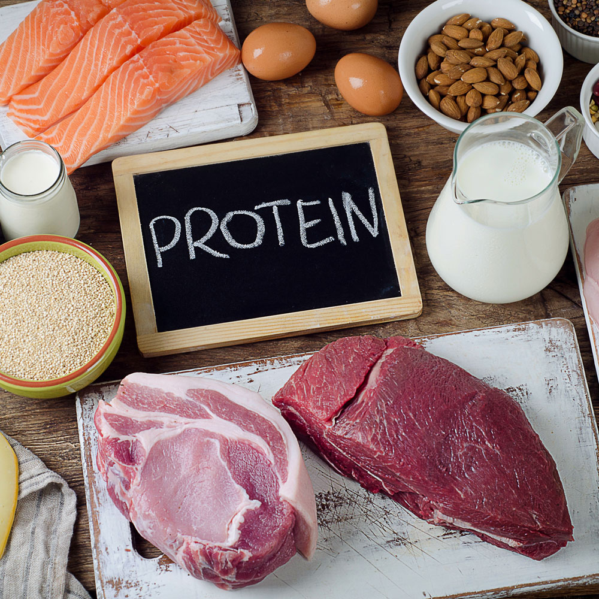
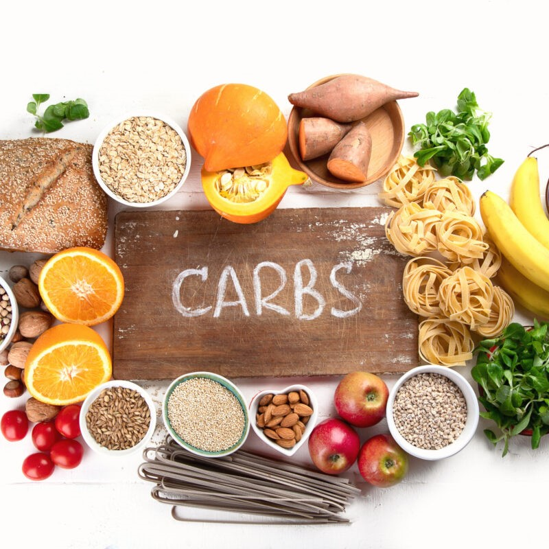
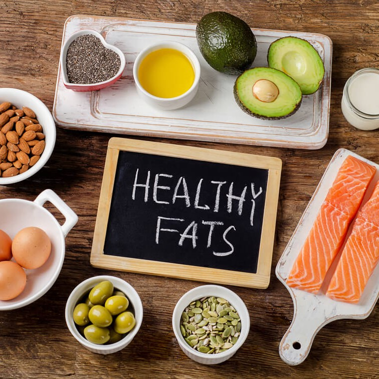

Embrace the synergy of a balanced lifestyle – nourishing your body with wholesome foods while engaging in regular exercise. Fuel your workouts with nutrient-dense meals, prioritizing lean proteins, colorful vegetables, and whole grains. Together, healthy eating and exercise empower you to achieve optimal well-being and unlock your full potential.
HIGH PROTEIN FOODS

- 1. Eggs - One large egg (50 g) provides 6.3 g of protein (5Trusted Source).
- 2. Almonds - One ounce (28.35 g) of almonds provides 6 g of protein (7Trusted Source).
- 3. Chicken breast - One half of a chicken breast (86 g) provides 26.7 g of protein (10Trusted Source).
- 4. Cottage cheese - One cup (226 g) of cottage cheese provides 28 g of protein (11Trusted Source).
- 5. Greek yogurt - One 7-ounce (200-g) container provides 19.9 g (14Trusted Source).
HIGH CARBOHYDRATES FOODS

- 1. Quinoa - Cooked quinoa contains 70% carbs, making it a high carb food.
- 2. Oats - Raw oats contain 70% carbs. A 1-cup (81-gram) serving contains 54 grams of carbs.
- 3. Buckwheat - Raw buckwheat contains 75 grams of carbs, while cooked buckwheat groats contain about 19.9 grams of carbs per 100-gram serving
- 4. Bananas - One large banana (136 grams) contains about 31 grams of carbs.
- 5. Sweet potatoes - One-half cup (100 grams) of mashed, cooked sweet potatoes with their skin on contains about 20.7 grams of carbs.
HIGH FATS FOODS

- 1. Avocados - avocados are about 80% fat, by calories, making them even higher in fat than most animal foods
- 2. Cheese - It is a great source of calcium, vitamin B12, phosphorus, and selenium and contains many other nutrients.
- 3. Dark chocolate - It is very high in fat, with fat accounting for around 65% of calories.
- 4. Fatty fish - Fatty fish is widely regarded as one of the most nutritious animal protein sources available.
- 5. Nuts - They are high in healthy fats and fiber and are a good plant-based source of protein.
HIGH VITAMIS AND MINARALS FOODS

- 1. Nuts and seeds - Nuts and seeds are packed with an array of minerals but particularly rich in magnesium, zinc, manganese, copper and selenium.
- 2. Shellfish - Shellfish, including oysters, clams, and mussels, are concentrated sources of minerals and packed with selenium, zinc, copper, and iron.
- 3. Cruciferous vegetables - Eating cruciferous vegetables like cauliflower, broccoli, Swiss chard, and Brussels sprouts, is associated with numerous health benefits.
- 4. Beans - beans also contain antinutrients, including phytates, which can decrease nutrient absorption.
- 5. Cocoa - Cocoa and cocoa products are particularly rich in magnesium and copper.
SUPPLIMENTS

- 1. Creatine - It provides energy for your muscles and other tissues.
- 2. Protein supplements - Getting enough protein is critical for gaining muscle.
- 3. Weight gainers - Weight gainers are supplements designed to conveniently help you get more calories and protein.
- 4. Beta-alanine - Beta-alanine is an amino acid that reduces fatigue and may improve exercise performance.
- 5. Branched-chain amino acids - Branched-chain amino acids (BCAAs) consist of three individual amino acids: leucine, isoleucine, and valine.
WHY IS WATER IMPORTANT

- 1. It helps create saliva - Saliva also includes small amounts of electrolytes, mucus, and enzymes.
- 2. It regulates your body temperature - Your body loses water through sweat during physical activity and in hot environments.
- 3. It protects your tissues, spinal cord, and joints - This will help you enjoy physical activity and lessen discomfort caused by conditions like arthritis.
- 4. It helps excrete waste through perspiration, urination, and defecation - You also need enough water in your system to have healthy stool and avoid constipation
- 5. It helps maximize physical performance - Hydration also affects your strength, power, and endurance.